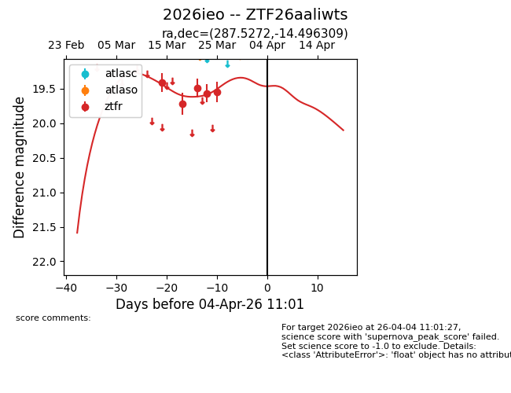
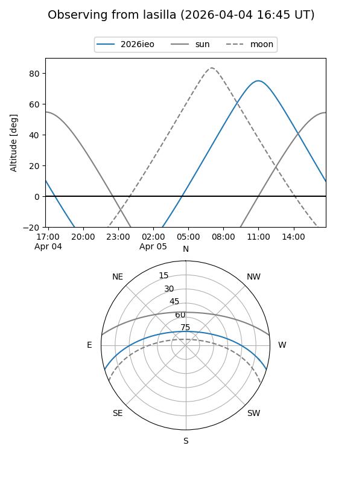
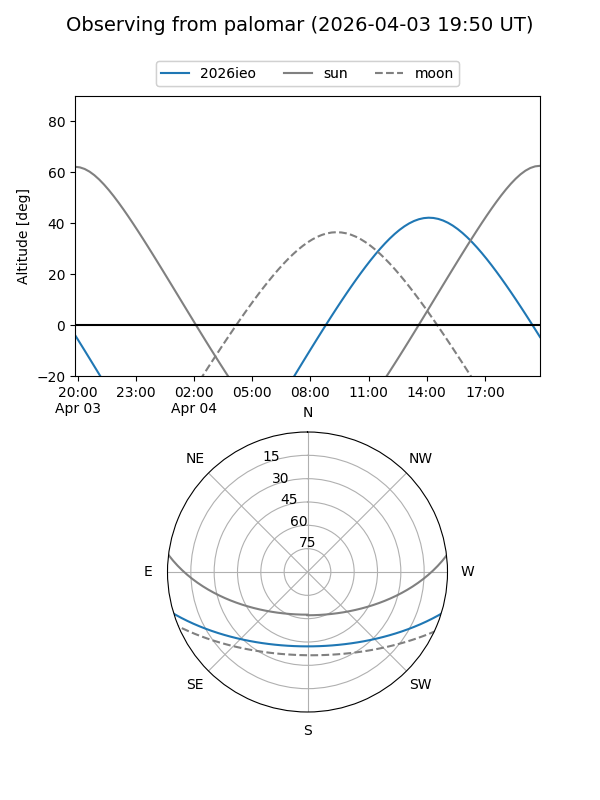
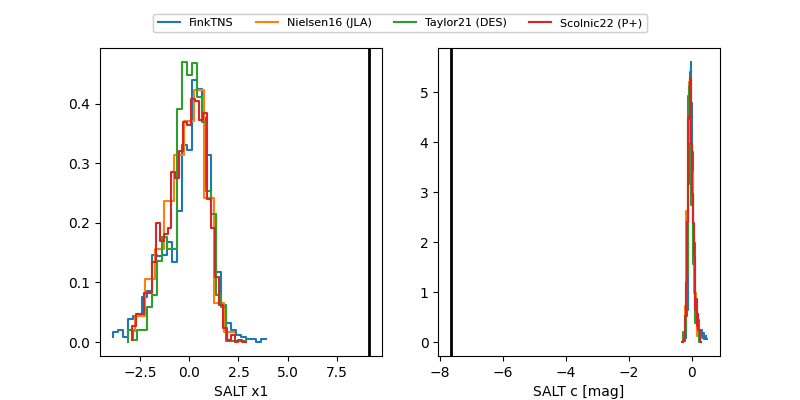

2026ieo
Target 2026ieo at 2026-04-04 11:05
Aliases and brokers:
FINK: link
Lasair: link
ALeRCE: link
TNS: link
YSE: link
alt names
ZTF26aaliwts (ztf,fink_ztf)
2026ieo (tns,yse)
Coordinates:
equatorial (ra, dec) = 287.5272,-14.49631
equatorial (HMS+DMS) = 19:10:06.54,-14:29:46.71
galactic (l, b) = (21.9728,-10.61801)
Flags:
Photometry:
last ztfr=19.55
5 ztfr detections
Lightcurve

Visibility


Additional plots
